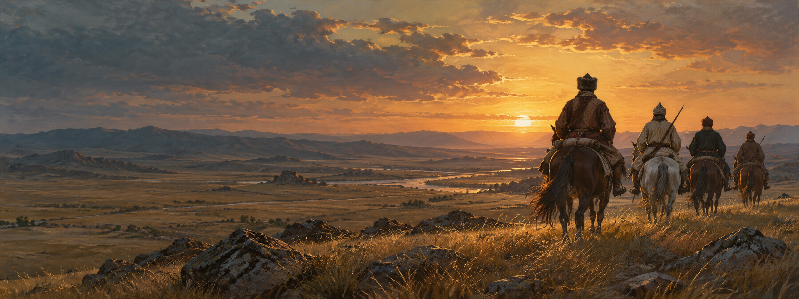

Тарихтың
ізімен.
Кенесары Қасымұлы бастаған он жылдық қозғалысты кеңістік, уақыт және дерек арқылы қайта аш. Бұл — оқып шығатын беттер емес, өзің зерттейтін тарих.

ATLAS
Оқиғаның өзін емес,
оның ізін зертте.
Көтеріліс оқиғалары әр өңірде өтті. Карта олардың орнын көрсетсе, хронология уақытын байланыстырады, ал зерттеу тапсырмасы деректі салыстырып, өз тұжырымыңды жасауға көмектеседі.
Зерттеуге арналған цифрлық орта
Нақты карта, салыстырмалы хронология және дерекке құрылған тапсырмалар бірін-бірі толықтырады. AI тәлімгер сұрақ қояды — дәлелді қорытындыны сен жасайсың.
Тарихқа өз жолыңмен жақында.
Кез келген бөлімге өтіп, картаны, хронологияны, дерекпен жұмысты немесе AI тәлімгерді қолдан.
Көтеріліс тарихы
Себептерін, мақсаттарын, тұлғаларын, кезеңдерін және тарихи маңызын бір жерден зертте.
HAN ATLAS — карта
Тарихи аймақтарды таңдап, оқиға туралы қысқаша мәлімет пен зерттеу сұрағын аш.
Хронология
Көтерілістің кезеңдерін реттеп, бір оқиғаның келесісіне қалай жалғасқанын қарастыр.
HAN QUEST
Дереккөздерді салыстыр, қорытынды құрастыр және өз жауабыңды жаз.
AI зерттеу көмекшісі
Тақырыпты түсінуге арналған сұрақ қой. Жауапты дерекпен қайта тексеруді ұмытпа.
Зерттеу зертханасы
Деректі детективпен зертте, тест тапсыр, ой тізбегін құрастыр және зерттеу паспортыңды жина.
Дерекхана
Әр тұжырымның бастапқы материалын тауып, авторы мен контекстін салыстыр.
Карта — тарихи деректің орнына жүрмейді.
Картадағы әр белгіге дәлдік деңгейі тіркелген. Қазіргі елді мекеннің бағдар нүктесі тарихи бекіністің дәл орны деген сөз емес; расталмаған маршрут ойдан сызылмайды. Нақты атау мен мерзімді дереккөздермен салыстыр.